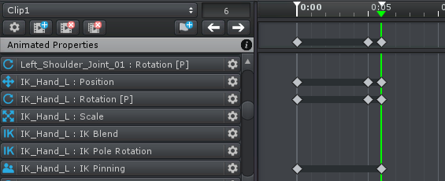
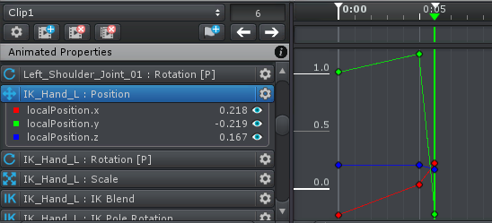
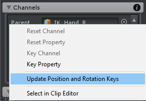
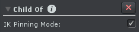

Child-Of Professional
With the Child-Of Constraint it is possible to change the parent of a joint/transform during an animation. This is useful for pick-up, throwing or gun reloading animations.
Please note, that due to the fact that Unity uses a Vector3 for scaling, it is technically not possible for the Child-Of constraint to correctly distort a joint/transform when the parent is scaled and the child is rotated. That's why the decision was made that the scale is never updated when the new parent's scale is changing.
Only one Child-Of Constraint can be added per joint/transform.
Dealing With Spaces
Whenever the parent of any object (joint or transform) is changed by using the Child-Of constraint, you need to remember that this will also change the space the object's local position and rotation values. Think of the "zero" local position/rotation. As it the local position/rotation values are relative to the parent the object will be in completely different world space position depending if the parent is changed.
When changing the parent within an animation (either by keying the Parent or the IK Pinning property) also the space of the object's position/rotation will change from this frame on. Thus it is necessary to key the object's new position and rotation values at the same frame. If this would not be done, the position/rotation values of the previous parent's space would be used within the new parent's space which would produce some incorrect results.
It is also necessary to create a key for the object's position/rotation in the previous parent's space one frame before the parent is changed. Without this key, the animation curve would gently interpolate from the last position/rotation key (which is in the previous parent's space) to the position/rotation keys in the new parent's space. This would result in values that are neither in the previous nor in the new parent's space.
Child-Of Changing Parent - 2 position/rotation keys are necessary
Child-Of Changing Parent - Position curve in different spaces
As you can see in the above screenshots without the key on frame 5, the curve would gently interpolate from frame 0 to frame 6. Between frame 5 and 6 the spaces are changed within one frame.
The good news is that UMotion automatically creates these keys whenever a new parent key is created. But it is in your responsibility to keep those keys up to date. That means that whenever you move or delete the parent key you need to move or delete the position/rotation keys accordingly.
Updating Position/Rotation Keys
When you want to update the position/rotation of the object at the frame where the parent was keyed (or one frame before) it is necessary to update also the keys that are in the other space accordingly. Therefore, right click on the Parent or IK Pinned property and click on Update Position and Rotation Keys. This will automatically update the corresponding position/rotation keys in the other space. If keys have been deleted they will be recreated. This context menu item is only available at the frame where the Parent or IK Pinned property has a key or one frame before.
Child-Of Parent Channel - Context Menu
When creating a parent key (that changes the current parent) and there are existing position/rotation keys at frames afterwards a dialog will automatically appear asking if the existing keys should be converted to be in the new parent's space.
Setup
Child-Of Constraint - Setup
| UI Element | Description |
|---|---|
| IK Pinning Mode | The IK Pinning Mode can be enabled on the IK handle to extend the Inverse Kinematics Constraint with pinning functionality. In this mode the Parent property of the Child-Of constraint is replaced by an IK Pinning toggle (on/off) property (see below). When an IK handle is pinned its parent is changed to be the root GameObject thus making it stay at its current position even if other bones are moved. When not being pinned the regular parent of the IK handle is used. Thus it is recommended to use the parent bone of the IK chain as IK handle parent (e.g. for the "IK_Left_Hand" the parent should be "LeftShoulder" or for the "IK_Left_Foot" the parent should be the "Hips"). The IK Setup Wizard is automatically setting up the IK pinning. |
Animated Properties
| Property | Description |
|---|---|
| Parent | Selects a new parent. If none is selected, its original parent is used. |
| IK Pinned | This property replaces the parent property when "IK Pinning Mode" was enabled. When an IK handle is pinned, it stays in position even if the rest of the model is moved. This is achieved by making the IK handle a child of the root GameObject. |